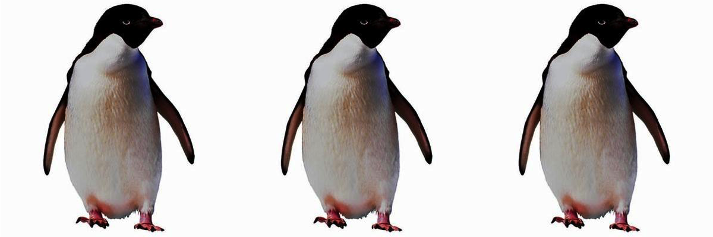

<!DOCTYPE html>
<html>
<head>
    <title>Demo experiment</title>
    <script src="../jspsych.js"></script>
    <script src="../plugins/jspsych-html-keyboard-response.js"></script>
    <script src="../plugins/jspsych-image-audio-response.js"></script> 
    <script src="../plugins/jspsych-instructions.js"></script>
    <link rel="stylesheet" href="../css/jspsych.css"></link>
    <style>
        img { width: 300px; }
    </style>
    <meta charset="utf-8" />
</head>
<body></body>
<script>

    let timeline = [];

    /* create welcome message */
    /*let welcome = {
        type: "html-keyboard-response",
        stimulus: "<h2>欢迎来到语言与图像实验研究！</h2>" + 
        "在这个实验里，您将会看到一些图片，您的任务是根据图片说出图片里物品的数量和名称。在实验过程中，您将会被录音。" +
        "在实验正式开始之前，你将进入练习部分，完成几个练习后您将进入实验的主要部分。" +
        "<p>整个实验大约需要15-20分钟。您的参与是自愿的。</p>" +
        "<p>如果您同意参加实验，请按任何一个键继续。谢谢！</p>"
    };
    timeline.push(welcome); */

    let welcome = {
        type: 'instructions',
        pages: ['<h2>欢迎来到语言与图像实验研究！</h2>在这个实验里，您将会看到一些图片，\
        您的任务是根据图片说出图片里物品的数量和名称。\
        <br/>在实验过程中，您将会被录音。</p>',
        '在实验正式开始之前，您将进入练习部分。完成简短的练习后，您将进入实验的主要部分。',
        '整个实验大约需要15-20分钟。您的参与是自愿的。如果您同意参加实验，请点击下一页继续。谢谢！'],
        show_clickable_nav: true
    };
    timeline.push(welcome);

    let instuction1 = {
        type: 'instructions',
        pages: ['<h2>实验说明</h2>在实验中，我们将对您进行录音。请确保您的麦克风处于打开状态。',"<h2>实验说明</h2> \
        在实验中，您将看到类似如下的图片。您的任务是根据图片，说出图中物品的数量和名称。</br> \
        例如：“三只企鹅” </br></br></br> \
        <div style='float: center;'></img></br></br></br>"],
        show_clickable_nav: true
    };
    timeline.push(instuction1)

    let instuction2 = {
        type: 'instructions',
        pages: ['<h2>实验说明</h2>在练习中，您将有机会回放检查自己的录音。<strong>录音完成后，请点击播放键检查录音是否成功。</strong></br>\
        如果您能听到自己的声音，说明录音成功可以继续。否则，请检查麦克风设置。</br>\
        请点击下一页进入练习。</br></br></br>'],
        show_clickable_nav: true
    };
    timeline.push(instuction2)    

    /**
     * Function to execute on recorded data. This function should handle saving the data and return a
     * JSON/csv-friendly value which will be inserted into the results. This allows the saved data to be
     * related back to the trial which generated it.
     *
     * This particular function generates an object URL and returns that.
     *
     * @param data - audio data recorded from the user
     * @returns {string} - JSON/csv-friendly data to be inserted into jspsych results report
     */
    const saveFunction = function(data) {
        const blob = new Blob(data, { type: 'audio/webm' });
        let url = URL.createObjectURL(blob);
        return url;
    };
    
    const bufferLength = 5000;

    timeline.push({
        type: 'image-audio-response',
        stimulus: 'img/MisMatch_0062_pumpkin_2.png',
        //stimulus_duration: 4000,
        postprocessing: saveFunction,
        response_ends_trial: false,
        prompt: "<p>请说出图中物品的<b>数量</b>和<b>名称</b></p>",
        allowPlayback: true,
        bufferLength
    });

    timeline.push({
        type: 'image-audio-response',
        stimulus: 'img/Match_0019_tank_4.png',
        //stimulus_duration: 4000,
        postprocessing: saveFunction,
        response_ends_trial: false,
        prompt: "<p>请说出图中物品的<b>数量</b>和<b>名称</b></p>",
        allowPlayback: true,
        bufferLength
    });

    timeline.push({
        type: 'image-audio-response',
        stimulus: 'img/Match_0038_sewingmachine_3.png',
        //stimulus_duration: 4000,
        postprocessing: saveFunction,
        response_ends_trial: false,
        prompt: "<p>请说出图中物品的<b>数量</b>和<b>名称</b></p>",
        allowPlayback: true,
        bufferLength
    });    

    let instruction3 = {
        type:'instructions',
        pages: ['练习结束。</br> 如果您能在录音回放中听到自己的声音，请点击下一页进入正式实验。</br>\
        在正式实验中，我们将不提供录音回复，您做的每一题依然会被录音，请放心回答。'],
        show_clickable_nav: true
    };
    timeline.push(instruction3)

    timeline.push({
        type: 'image-audio-response',
        stimulus: 'img/Match_0008_cabbage_2.png',
        //stimulus_duration: 4000,
        postprocessing: saveFunction,
        response_ends_trial: false,
        prompt: "<p>请说出图中物品的<b>数量</b>和<b>名称</b></p>",
        bufferLength
    });

    timeline.push({
        type: 'image-audio-response',
        stimulus: 'img/Match_0026_calculator_3.png',
        //stimulus_duration: 4000,
        postprocessing: saveFunction,
        response_ends_trial: false,
        prompt: "<p>请说出图中物品的<b>数量</b>和<b>名称</b></p>",
        bufferLength
    });

    timeline.push({
        type: 'image-audio-response',
        stimulus: 'img/Match_0030_sofa_4.png',
        //stimulus_duration: 4000,
        postprocessing: saveFunction,
        response_ends_trial: false,
        prompt: "<p>请说出图中物品的<b>数量</b>和<b>名称</b></p>",
        bufferLength
    });

    jsPsych.init({
        timeline: timeline,
        show_progress_bar: true,
        on_finish: function(){
            jsPsych.data.displayData();
        }
    });

</script>
</html>
